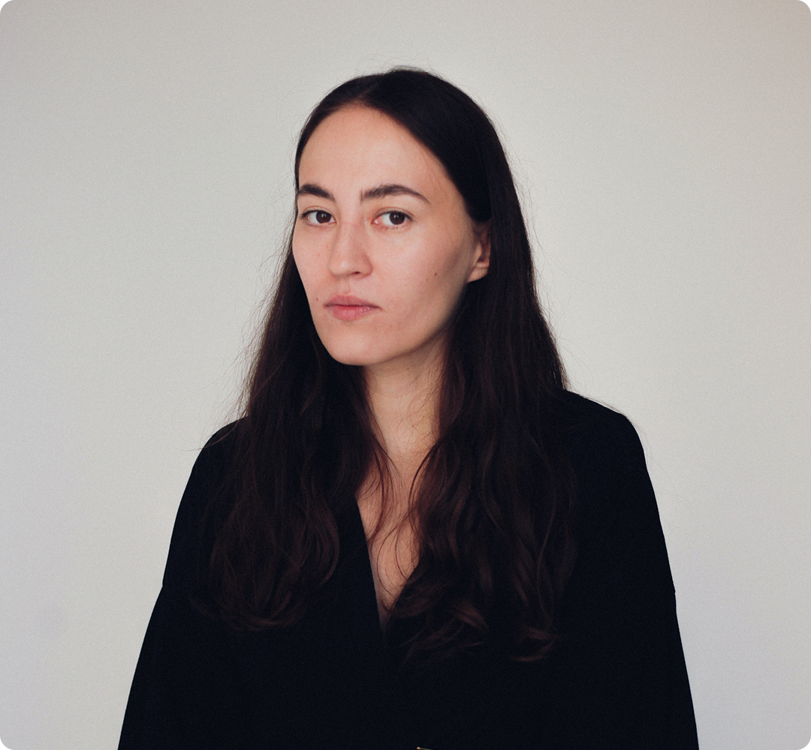

Опыт
Студия wave
Старший дизайнер · 2021 — настоящее время
Работаю над сайтами, цифровыми сервисами и айдентикой. Веду дизайн от обсуждения задачи и первых концепций до передачи макетов в разработку и проверки реализации.

Дизайнер с опытом около 5 лет в цифровых продуктах, веб-дизайне и айдентике. Работаю над проектами от первых идей и визуальных концепций до сложных интерфейсов и пользовательских сценариев.
Старший дизайнер · 2021 — настоящее время
Работаю над сайтами, цифровыми сервисами и айдентикой. Веду дизайн от обсуждения задачи и первых концепций до передачи макетов в разработку и проверки реализации.
Digital / Product Designer · 2025–2026
Работала над айдентикой, сайтом и интерфейсами инвестиционной платформы. Основная задача — понятно представить инвестиционные предложения и помочь пользователю разобраться в механике продукта.
Digital / Product Designer · 2025–2026
Работала над ребрендингом, сайтом и цифровыми коммуникациями сети центров хранения. Развивала визуальную систему и помогала понятнее рассказывать об услуге частным клиентам и бизнесу.
UX/UI design / prototyping / design systems / product design / visual concepts / brand identity
Project coordination / task planning & estimation / team collaboration / client communication / design presentation
Figma / GPT / Claude / Spline / Notion / Tilda / Framer / Notion / Slack / Яндекс Метрика / Google Analytics
читаю все письма
gaireggi@gmail.comtelegram
@momonaramona